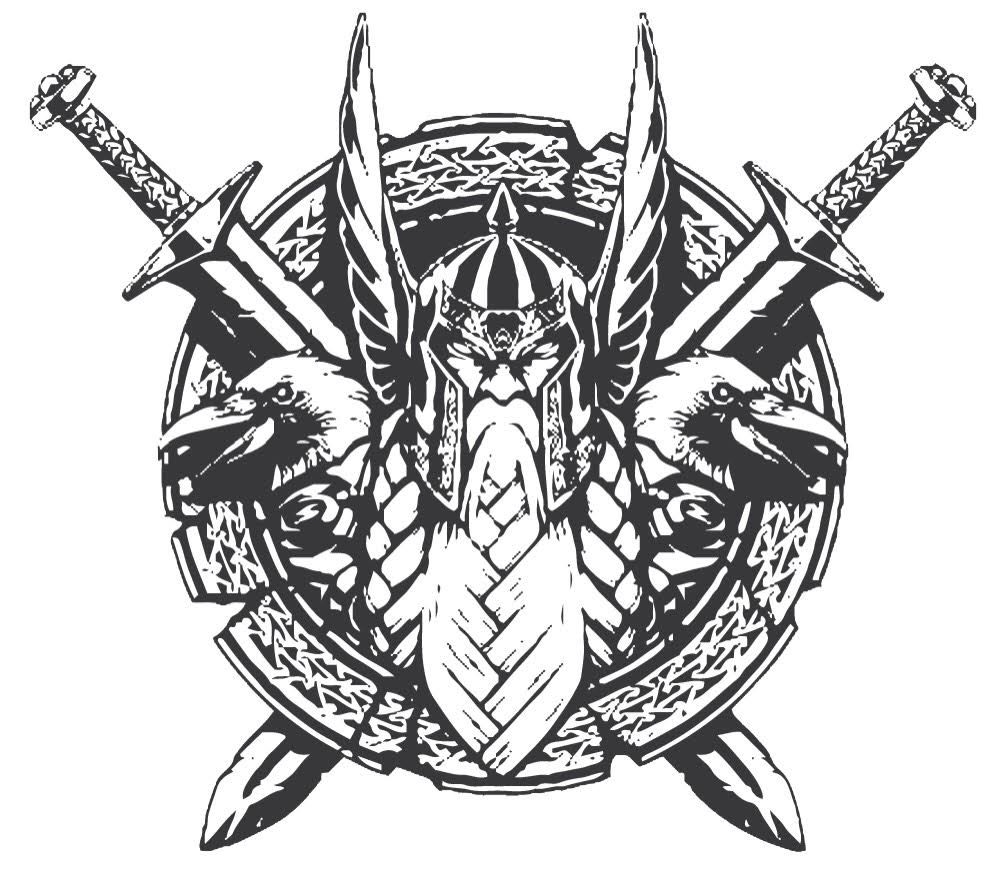

Odin is the main god in Norse Mythology. Described as an immensely wise, one-eyed old man, Odin has by far
the most varied characteristics of any of the gods and is not only the man to call upon when war was being
prepared but is also the god of poetry, of the dead, of runes, and of magic. Part of the AEsirfamily of the
gods, he helped create the world, resides in Asgard (the stronghold and home of the gods), and gathers slain
warriors around him in Valhalla, but is eventually crunched to death by the wolf Fenrir in the Ragnarok, the
'final destiny of the gods' in which the world is destroyed.

Odin Battles
In modern popular culture, Odin is often portrayed as being an eminently honorable ruler and battlefield commander
(not to mention impossibly muscular), but to the ancient Norse, he was nothing of the sort. In contrast to more
straightforwardly noble war gods such as Tyr or Thor, Odin incites otherwise peaceful people to strife with what, to
modern tastes, is a downright sinister glee. His attitude is not far from Nietzsche's dictum, (You say it is the
good cause that hallows even war? I say unto you: it is the good war that hallows any cause.)